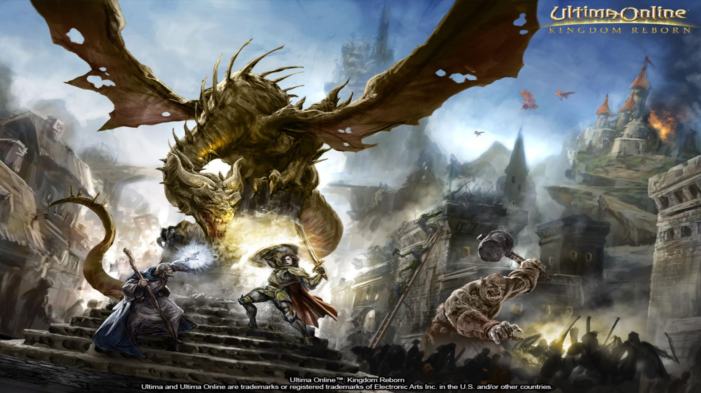

Ultima Online (abrégé en UO) est un jeu de rôle en ligne massivement multijoueur
publié le 30 septembre 1997 par la société Origin Systems. Il est souvent considéré comme le premier MMORPG populaire.
Le jeu nécessite d'être connecté via Internet à un serveur de jeu et immerge les joueurs dans un univers médiéval fantastique.

Aperçu
Le succès du jeu a créé un nouveau marché dans le monde des jeux vidéo multijoueurs.
Le monde est représenté à l'aide d'une vue isométrique à la troisième personne reprenant l'univers de la série Ultima.
En ligne uniquement, des milliers de joueurs peuvent se connecter simultanément. Afin de maintenir l'ordre dans le monde,
des maîtres du jeu sont chargés de résoudre les conflits entre joueurs, d'appliquer les règles et de réparer les erreurs causées par des bugs.
Aujourd'hui, le monde d'Ultima Online est toujours parcouru par un grand nombre de fidèles.
Mais il perd peu à peu du terrain face aux nombreux MMORPG modernes qui disposent de graphismes plus évolués,
de mondes plus vastes ou qui exploitent tout simplement des univers très connus comme Le Seigneur des Anneaux Online,
Star Wars Galaxies ou encore World of Warcraft.